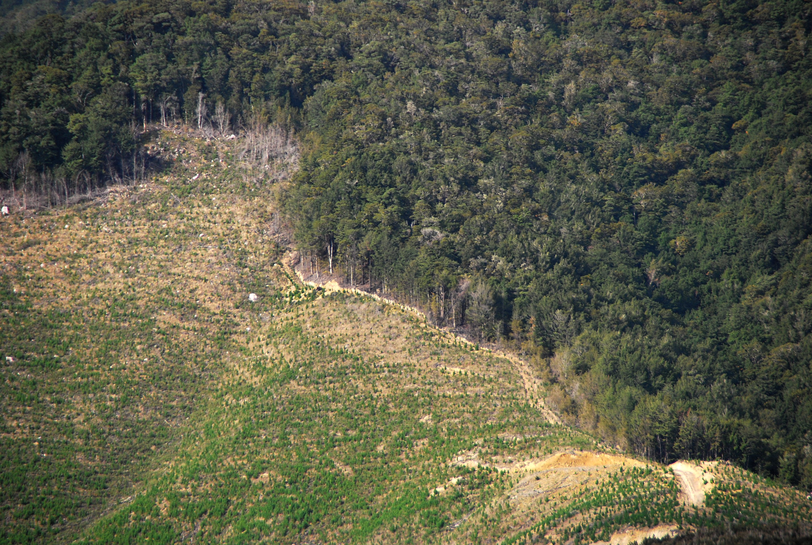

Most people think of a kaitiaki as someone who guards or protects the natural world. Maybe they look after a stream or beach, a native species under threat, or a local reserve. The term kaitiakitanga (the act of being a kaitiaki) comes from te ao Māori. It can mean each generation teaches the next about protecting taonga tuku iho – precious resources passed on by the ancestors. These resources include the land, ocean, rivers, lakes, mountains, and forests. Te reo Māori and Māori knowledge are also taonga tuku iho.